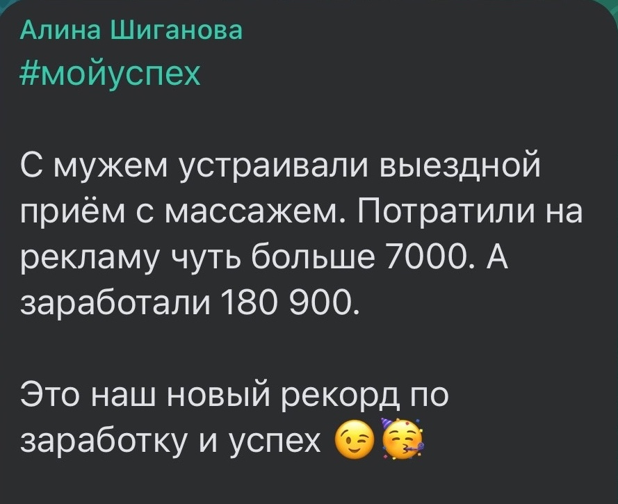

Алина Шиганова, менеджер супруга массажиста из Новосибирска, поделилась с нами тем, какие результаты у нее по продвижению мужа в ВК.
До курса доход мужа составлял 30-40 тысяч рублей в месяц, при этом график работы был неравномерным и нестабильным. После прохождения курса и запуска рекламы, средняя прибыль выросла до 90-130 тысяч рублей в месяц. За прошлый год заработали более 1 миллиона рублей, а в этом году уже достигли отметки в 800 тысяч за полгода.
Жизнь кардинально изменилась: смогли полностью обустроить домашний кабинет, регулярно путешествуют и делают крупные покупки.
Полное интервью в читай в этой статье.
— Алина, расскажи, что было до курса, какой средний доход был в месяц? Сколько клиентов?
— Муж работал в частной клинике. На тот момент его ЗП в месяц была 30-40т.
Пациенты по времени были размазаны на весь день. То есть первый мог быть в 11, второй в 16, последний в 19. И домой ехать смысла особо нет, и в клинике столько времени в пустую уходит. А можно же было заниматься чем-то важным.
Бывали дни, когда вообще не было клиентов. Директор клиники, конечно же, простои никак не оплачивал. Клиентов нет, но вы держитесь.
За все 3 года, что муж проработал в клинике был один месяц, когда он заработал 80 тясяч. Но он не жил, а буквально выживал в тот момент. Толком не мог пообедать, весь день на ногах, пациенты нон-стопом. Я была в шоке и не хотела, чтобы муж так себя изматывал.
Задумались о его продвижении. Нашла таргетолога, чтобы он помог нам оформить группу и запустить рекламу, и...
Он не смог пройти модерацию. У нас просили мед. лицензию, которой у нас не было.
После этого мы год просто вели группу, можно сказать, для галочки. Потому что были уверены – путь в рекламу для нас закрыт.
А потом мне попалась реклама ВК-лайта. Я прошла мини-курс и влюбилась в твою подачу. Просмотрела все уроки за один присест. Тут же выписала, что можно в группе докрутить. Конечно, меня очень сильно подкупило, что вы работаете с массажистами и знаете, как пройти модерацию.
Поэтому, без всяких сомнений я пошла на ВК бабло.
— Какие сложности были во время обучения на нашем курсе? Насколько сложно было учится? За сколько прошла обучение?
— Сложностей не было никаких. Настолько легко и подробно всё рассказываете и показываете с Вовой, что любой новичок, как я, со всем разберется.
Первые 4 блока я прошла за месяц. Помню, как пришла к тебе на первый разбор. Очень волновалась, что вы сейчас всё засрете. Но, когда ты похвалила нашу группу, появилось ещё больше сил и вдохновения работать дальше. Меня же Евгения Брун похвалила! И с новым вдохновением я взялась за рекламу.
Хотя с ней, конечно, пришлось сначала повозиться. Не сразу хотели пропускать нашу группу в рекламу. Зато сейчас модерацию на раз-два прохожу.
— Каково было работать с куратором, что было полезно, мотивировало ли это тебя?
— Мне кажется, что моё обучение было более продуктивным с куратором. Очень тяжело с нуля изучать много новой информации. Допускаешь много пустяковых ошибок. Это сейчас мне кажется всё понятным и очевидным. Но во время обучения без помощи Лены было не обойтись.
— Какие сейчас делаешь действия для привлечения клиентов? Как часто пишешь посты? Запускаешь ли рекламу?
— Честно, группу последние полгода ведем как попало. Можем недели 2 вообще ничего не выкладывать. А потом за неделю выложить поста 2-3. Хотя, все посты у нас давно написаны на несколько лет вперед. Но, забываю их выкладывать, так как и без них хлопот теперь хватает.
Рекламу сейчас крутим 4 раза в год по 2 недели, чтобы собрать пациентов на выездной прием. Всё остальное время пациенты идут сами.
— А можешь поделиться, как изменилась жизнь, когда увеличился доход?
— О, с момента прохождения курса многое изменилось. Жизнь, буквально, с каждым годом становится интереснее и набирает обороты.
Мы каждый год летаем отдыхать, покупаем друзьям и родным хорошие подарки, сделали классный ремонт в своей трешечке за 4 месяца. Муж уже год работает чисто на себя. Полностью оборудовали для него кабинет, поэтому приём ведет на дому.
Сейчас готовим нашу вторую группу с онлайн курсами и копим на вторую квартиру. Кстати, 1/3 суммы уже у нас, лежит спокойненько на счете под проценты и копится.
— Какой доход в месяц сейчас? Сколько за год заработано? Сколько клиентов в месяц?
— Сразу, после прохождения ВК бабло, мы вышли на среднюю прибыль в 90 тысяч в месяц. То есть за прошлый год заработали чуть больше 1 млн.
В этом году средняя прибыль пока 130 тысяч. За полгода мы уже заработали 800 тысяч. А рекордный наш заработок составил 190 тысяч за месяц. И это при том, что на рекламу тогда мы потратили чуть больше 7 000 рублей.

Но нет предела совершенству. Хотим поднимать стоимость услуг и выйти на стабильную прибыль в 190 тысяч. Сейчас продумываем новую рекламную компанию, чтобы более точечно попасть в нашу ЦА.
— Алина, ты умничка) Спасибо тебе за ответы. Желаю вам с мужем огромного роста!